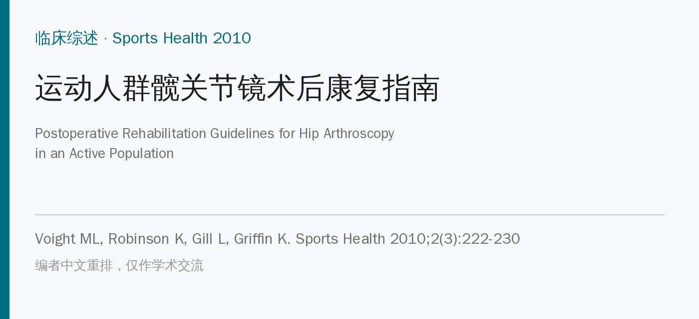
🔖原文信息（编者中文重排）
📚 文献信息
▪ Voight ML, Robinson K, Gill L, Griffin K. Postoperative rehabilitation guidelines for hip arthroscopy in an active population. Sports Health. 2010;2(3):222-230. doi:10.1177/1941738110366383
▪ 中文题目：运动人群髋关节镜术后康复指南
▪ 作者来自美国贝尔蒙特大学、Titleist 高尔夫表现研究所（TPI）、STAR 物理治疗诊所
▪ 文章类型：临床综述（检索 PubMed、EMBASE、PEDro，1992～2009 年），给出四阶段康复框架；样本方案见在线附录
过去十年髋关节镜越来越普及，髋关节内的问题（盂唇损伤、游离体、股骨髋臼撞击等）被更多地发现和处理。手术可以解决机械性问题，功能缺陷却要靠康复来纠正。但髋关节镜术后康复的研究证据很少，很多做法借鉴自膝、肩、肘、踝的微创术后康复。
• 康复目标：减轻症状（控制疼痛和炎症）、恢复功能（活动度、力量、本体感觉、耐力），按病情和功能需求系统推进
• 患者教育是基础：患者要明白注意事项和进阶节奏；和医生沟通，定出合理目标
• 不同术式节奏差别很大：退变明显者恢复慢，居家方案可能就够；软骨磨削成形、微骨折需要较长时间保护性负重；关节其他方面健康的盂唇修复者可以推进得更积极，最好在设备齐全的机构康复
原文附录 A 给出了不需要太多生物愈合的术式（游离体取出、盂唇清理、滑膜切除、圆韧带清理等）的样本方案，附录 B 给出了需要较多生物愈合的术式（盂唇修复、微骨折、股骨成形）的方案（仅在线提供，本文未收录）。
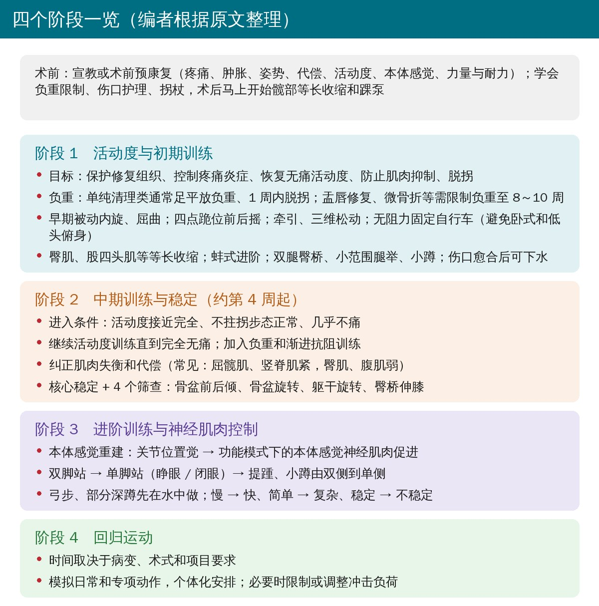
🔖四个阶段一览（编者根据原文整理）
• 可以是结构化的术前预康复，处理疼痛、肿胀、姿势偏差、代偿动作、活动度丢失、本体感觉下降和整体力量耐力；也可以只做一次全面的术前宣教
• 离开门诊前就要掌握负重限制、伤口护理和助行器使用
• 术后马上开始髋部等长收缩和踝泵，促进下肢循环
目标：保护修复组织、减轻疼痛炎症、恢复无痛活动度、防止肌肉抑制、不拄拐正常走路。这一阶段主要受软组织愈合限制，同时要避免制动的负面影响。
• 负重：不需要大量愈合的术式，通常允许足平放负重、1 周内脱拐；盂唇修复、微骨折等需要愈合的，可能限制负重长达 8～10 周
• 为什么是“足平放”而不是完全不负重：完全不着地需要很大的肌肉力量把腿悬空，反而在关节上产生明显的压力；让腿的重量放在地上，可以抵消这部分肌肉收缩产生的压力
• 臀中肌容易“掉线”：前外侧和后外侧入路都穿过臀中肌，术后常见反射性抑制，走路会出现特伦德伦堡步态（摆动侧骨盆下沉）；用拐杖帮助减少骨盆下沉、恢复正常步态
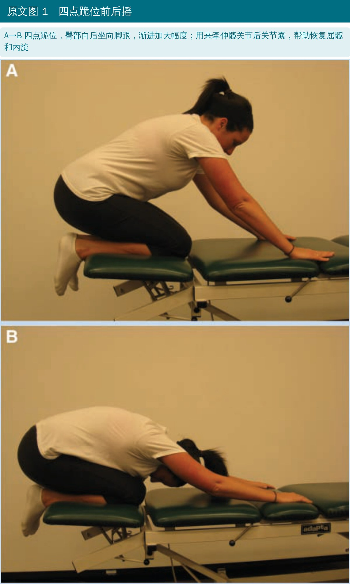
🔖原文图 1（加中文说明）
• 早期活动度：为减少关节周围粘连，重点做被动内旋和屈曲，防止关节囊和盂唇之间形成瘢痕；后关节囊紧会限制屈髋和内旋，可用四点跪位前后摇牵伸
• 牵伸只到能忍受：各平面都练，末端由不适程度决定；硬推极限对功能帮助不大，还会加重不适。例外：切除了阻挡活动的大骨赘后，早期积极牵伸可以拿回原来被挡住的活动度
• 固定自行车：无阻力或很小阻力，每天骑；不要用卧式自行车，也不要低头俯身，避免屈髋过大
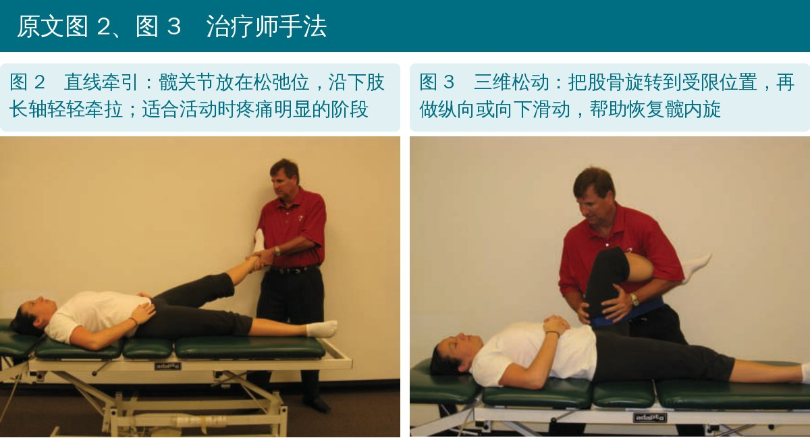
🔖原文图 2、图 3（加中文说明）
• 手法：小幅度附属振动刺激关节机械感受器、帮助止痛并保持关节囊活动度；关节中度疼痛时轻柔地做屈曲内收或内旋方向的分级松动
• 牵引：活动时疼痛明显的阶段最有用，沿股骨长轴轻柔振动牵拉，可在不同屈髋角度做
• 三维松动：把股骨旋转到受限位置，再做纵向或向下滑动；负重时痛的人，可在“压缩”方向做振动、停在疼痛位置之前
• 髋臼内前后方向活动很少，但前后滑动可用于止痛；在生理活动末端做附属滑动可以增加活动度
• 关节囊模式：术后积液常造成屈曲、外展、内旋明显受限，伸展和外旋丢失较少；疼痛受限时要仔细评估末端感觉，再决定能不能松动
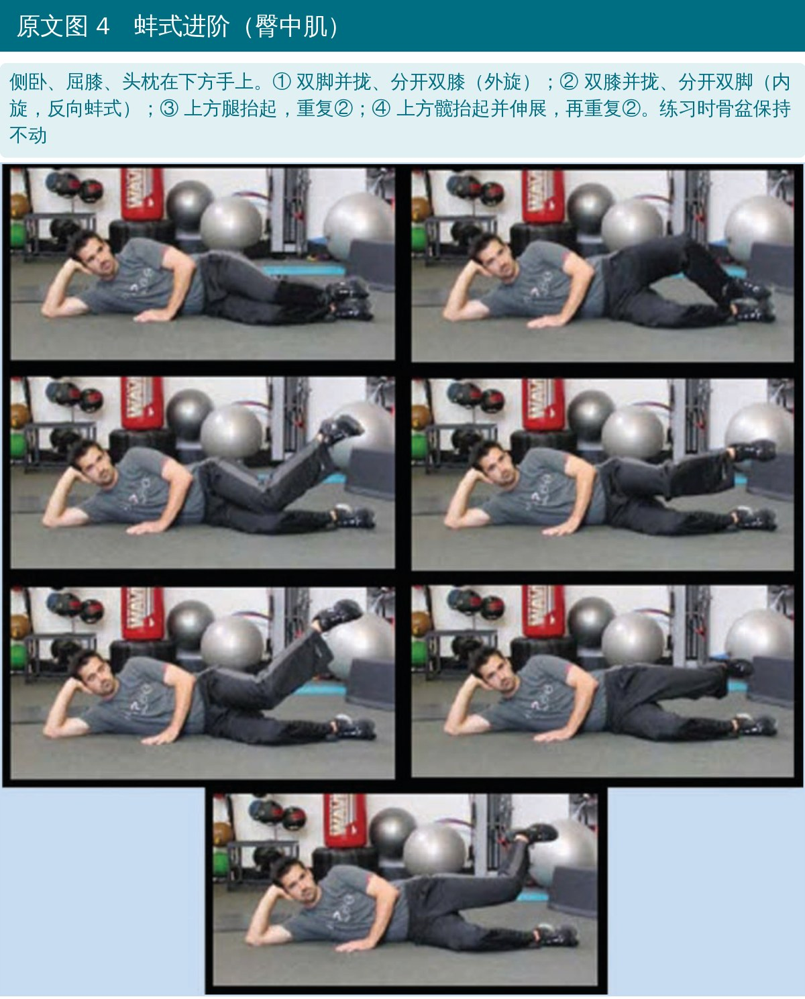
🔖原文图 4（加中文说明）
• 第一周内开始肌肉激活：等长收缩最简单、最不容易刺激关节，包括臀肌、股四头肌、腘绳肌、内收肌、外展肌和下腹部；拮抗肌等长收缩可能缓解痉挛和疼痛
• 重点练臀肌：骨盆中立位下做臀肌等长收缩，可能减轻髂腰肌痉挛和前髋痛；侧卧、俯卧徒手肌力测试评估臀肌，单腿蹲评估单腿支撑的动态质量
• 蚌式进阶：侧卧屈髋约 30°，先外旋（臀中肌后部），再反向蚌式内旋（臀中肌前中部），再抬腿与地面平行做内旋
• 同期可以开始双腿臀桥、小范围腿举和小蹲，练臀大肌
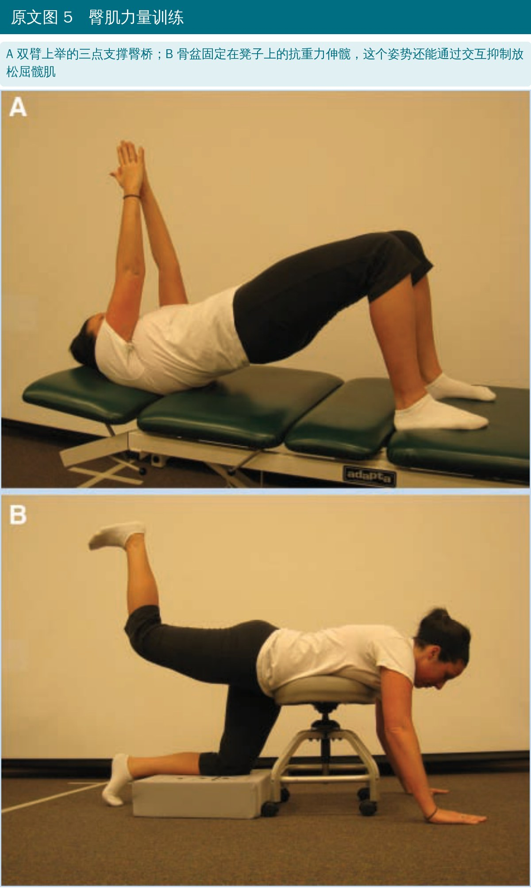
🔖原文图 5（加中文说明）
• 水中训练：伤口愈合、拆线后即可开始，浮力提供安全阻力，在齐腰深水中练步态，各平面活动都更容易
• 进入阶段 2 的条件：活动度接近完全、不拄拐步态正常、几乎不痛
• 继续活动度训练直到完全无痛，同时加强力量和稳定训练，加入负重和渐进抗阻
• 纠正肌肉失衡和代偿：长期过用或损伤会造成神经肌肉功能受损，表现为关节源性抑制、协同肌代偿主动肌、紧张肌肉抑制其拮抗肌
• 最常见的失衡：屈髋肌和竖脊肌紧、臀肌和腹肌弱，造成骨盆前倾、腰椎前凸增大
• 既往研究认为肌电激活超过 50%～60% 最大自主收缩的动作足以增强力量（原文表 1）
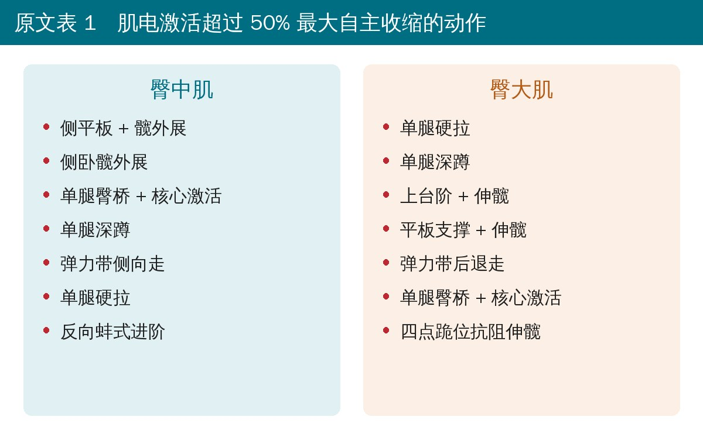
🔖原文表 1（编者翻译）
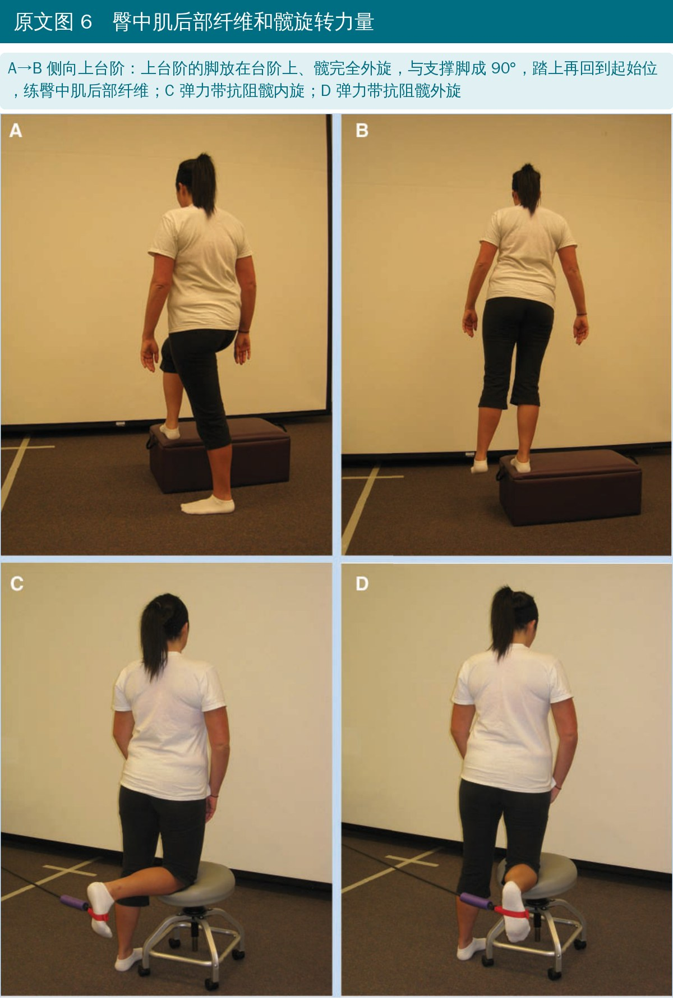
🔖原文图 6（加中文说明）
核心稳定常被忽视：很多人四肢专项肌肉的力量、爆发力和耐力都够了，腰-骨盆-髋复合体却不够。核心训练与髋部抗阻训练同步推进，并用 4 个动作筛查核心稳定。
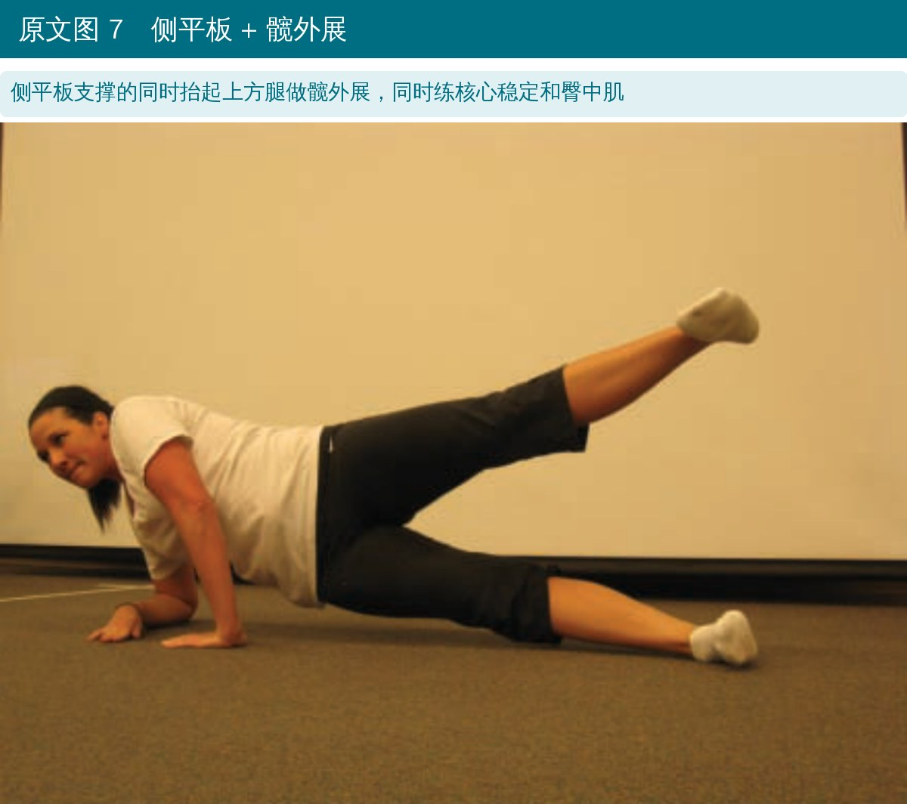
🔖原文图 7（加中文说明）
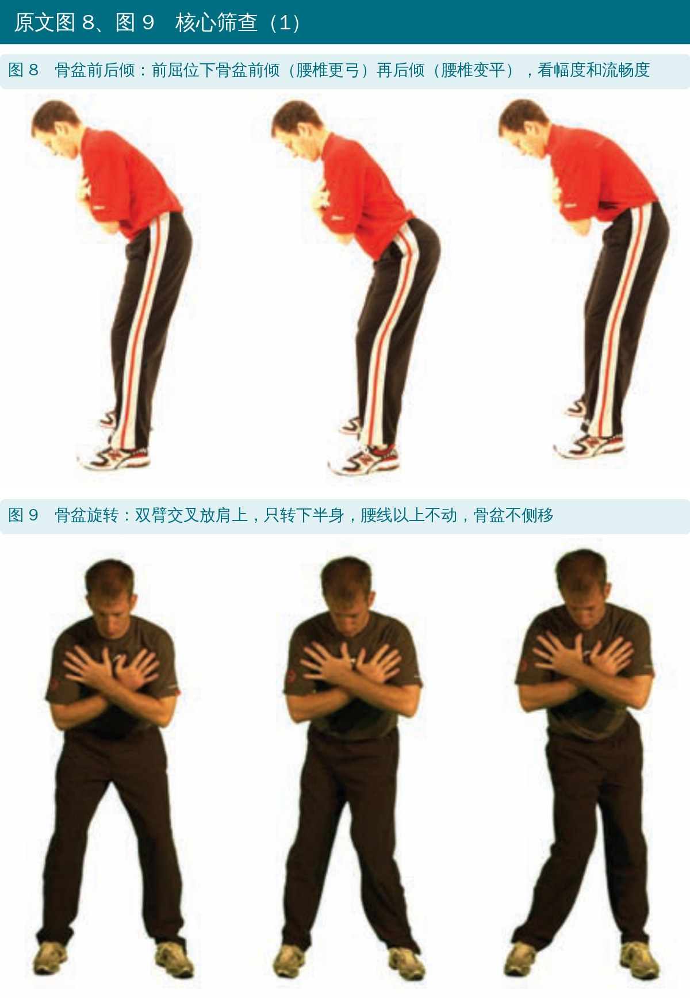
🔖原文图 8、图 9（加中文说明）
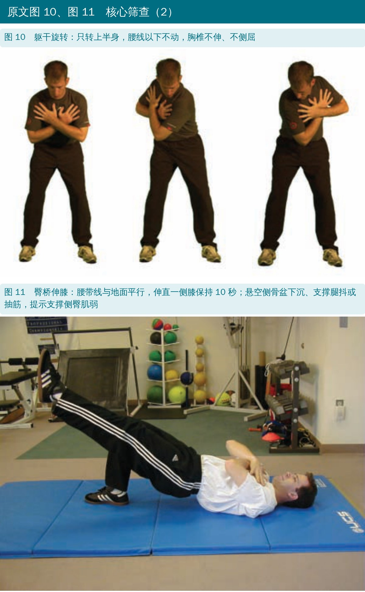
🔖原文图 10、图 11（加中文说明）
• 骨盆前后倾：检查髋和腰椎活动度以及骨盆姿势控制
• 骨盆旋转：下半身能否独立于上半身旋转，需要脊柱、髋、骨盆活动度和躯干稳定
• 躯干旋转：上半身能否独立于下半身旋转，腰线以下不应动
• 臀桥伸膝：保持 10 秒；悬空侧骨盆下沉或支撑腿抖，提示支撑侧臀肌弱；支撑侧腘绳肌或下背抽筋，提示臀肌被抑制、由协同肌代偿
• 关节损伤常伴随本体感觉缺陷；髋臼盂唇有游离神经末梢和感受器，还能维持关节内负压、增加稳定，损伤后稳定性可能下降
• 早期做关节位置觉训练，之后在功能模式和调整后的活动范围内做本体感觉神经肌肉促进
• 闭链训练逐步增加下肢负重转移，减少关节面剪切和平移力
• 平衡进阶：双脚站 → 单脚站（睁眼 / 闭眼）→ 双侧提踵、小蹲 → 单侧提踵、小蹲；部分深蹲、弓步、动态重心转移先在水中做
• 进阶原则：慢 → 快、简单 → 复杂、稳定 → 不稳定、低负荷 → 高负荷、一般 → 专项；平衡器材、小蹦床、结合上肢动作的平衡训练进一步挑战神经肌肉系统
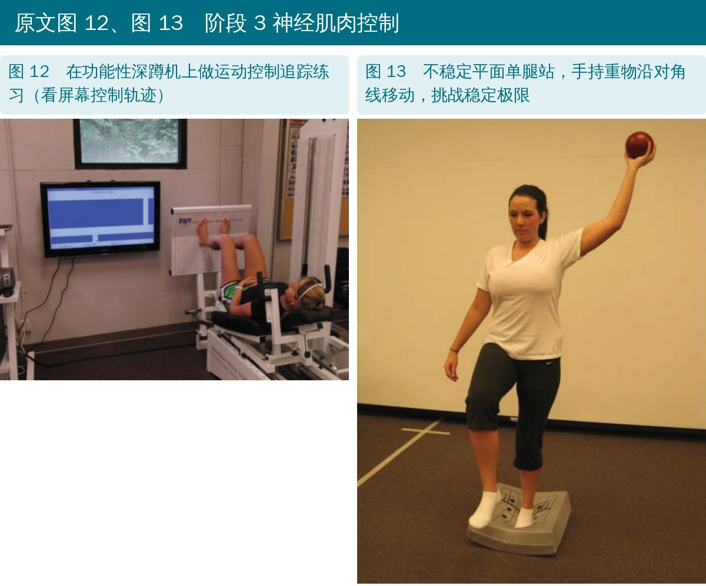
🔖原文图 12、图 13（加中文说明）
• 回归时间取决于髋关节病变和预期活动的具体要求
• 模拟日常和专项动作的功能训练要在病变允许的范围内个体化
• 根据病变程度和术式，愈合期间可能需要限制或调整运动产生的压缩负荷
髋关节镜术后康复普遍被认为很重要，但支持具体康复方案的循证研究很有限。作者认为康复的共同目标应是无痛活动和长期恢复髋关节功能；摘要称现有结局数据表明这一目标正在实现，但还需要更多数据验证长期效果。
• 本质是专家经验：虽然写了检索数据库和年份，但没有报告检索结果、纳入了哪些研究、证据质量如何，属于叙述性综述
• 没有给出疗效数据：正文没有任何结局数据，阶段划分、时间节点和动作选择都没有对照研究支持
• 后期阶段太粗：阶段 3、阶段 4 既没有时间范围也没有进阶标准，回归运动没有任何功能测试或量化标准
• 核心筛查缺少依据：4 个筛查动作（作者之一来自 TPI）没有信度、效度或判定标准
• 时间较早：发表于 2010 年，之后髋关节镜术后康复已有更多基于标准的进阶方案和回归运动测试，使用时要结合新证据
• 价值在于框架和动作库：四阶段思路、足平放负重的力学解释、臀中肌抑制的处理和 13 张动作图，作为临床参考很实用
• 摘要说“结局数据表明目标正在实现”：正文没有给出任何结局数据
• 检索年份与参考文献：摘要说检索 1992～2009 年文献，参考文献里却有 1971、1977、1978、1980 年的文献；检索结果和纳入标准都没有报告
• 阶段 2 的时间与负重限制矛盾：阶段 2“通常从第 4 周开始”、进入条件包括不拄拐步态正常，但盂唇修复、微骨折可能限制负重 8～10 周，这类患者第 4 周不可能达标
• 蚌式“强调内旋”：正文说蚌式进阶用来强调内旋，随后描述的第一步却是外旋；图 4 图注写“通过旋转骨盆分开双膝”，而蚌式通常要求骨盆不动
• 表 1 来源不清：表 1 引用的文献 13（Ekstrom 等 2007）只分析了 9 个康复动作，表 1 列出 14 项（单腿深蹲、单腿硬拉、单腿臀桥在两列重复出现），部分动作来源没有交代
• “骨盆前后倾的质量和幅度反映日常使用频率”：这一说法没有给出依据
• 参考文献拼写：Crowninshield 写成 Crowninsheild，Kelly、Philippon 写成 Kelley、Philapon，Thieme 写成 Theime，limbus 写成 lumbus；第四作者 Griffin 在文献 16、22 中写作 Griffen
• 先问清术式：清理类和修复类（盂唇修复、微骨折、股骨成形）的负重和进阶节奏完全不同，按医生的负重医嘱来
• 能足平放就别悬空：允许的话让腿的重量放在地上，比完全悬空对关节的压力更小
• 第一周就开始：髋部等长收缩、踝泵、无阻力固定自行车（不用卧式、不低头俯身）
• 盯住臀中肌：蚌式进阶、侧卧外展、侧平板外展；用单腿蹲和臀桥伸膝检查骨盆控制
• 活动度不硬推：重点恢复屈髋和内旋，只牵伸到能忍受；关节囊紧可配合牵引和三维松动
• 用标准而不是时间进阶：活动度接近完全、不拄拐步态正常、几乎不痛再进入阶段 2；后期补充力量测试、跳跃和专项测试作为回归标准（原文没有给出，编者补充）
• 水中训练是好帮手：伤口愈合后就能下水，弓步、部分深蹲可以先在水中做
表 1 肌电激活超过 50% 最大自主收缩、可用于增强臀中肌和臀大肌的动作
| 臀中肌 | 臀大肌 |
|---|---|
| 侧平板 + 髋外展 | 单腿硬拉 |
| 侧卧髋外展 | 单腿深蹲 |
| 单腿臀桥 + 核心激活 | 上台阶 + 伸髋 |
| 单腿深蹲 | 平板支撑 + 伸髋 |
| 弹力带侧向走 | 弹力带后退走 |
| 单腿硬拉 | 单腿臀桥 + 核心激活 |
| 反向蚌式进阶 | 四点跪位抗阻伸髋 |
欢迎关注悦美力公众号，获取更多物理治疗的专业知识！
📄参考文献：
Voight ML, Robinson K, Gill L, Griffin K. Postoperative rehabilitation guidelines for hip arthroscopy in an active population. Sports Health. 2010;2(3):222-230. doi:10.1177/1941738110366383
原文版权 © 2010 The Author(s)，SAGE 出版。本文为中文解读，仅作学术交流：照片引自原文图 1～图 13（编者加中文说明），四阶段总览为编者根据原文整理，表格为编者翻译。